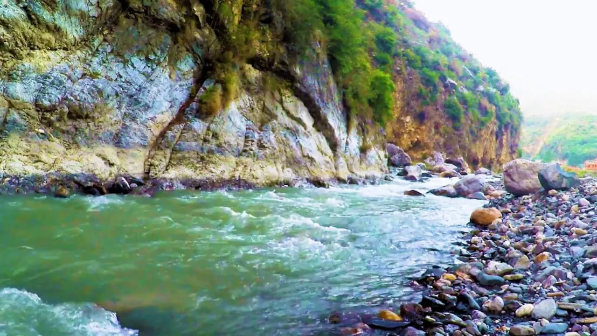
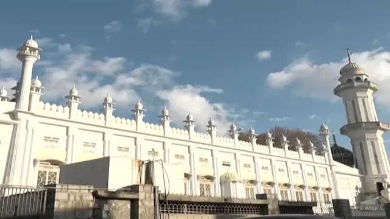
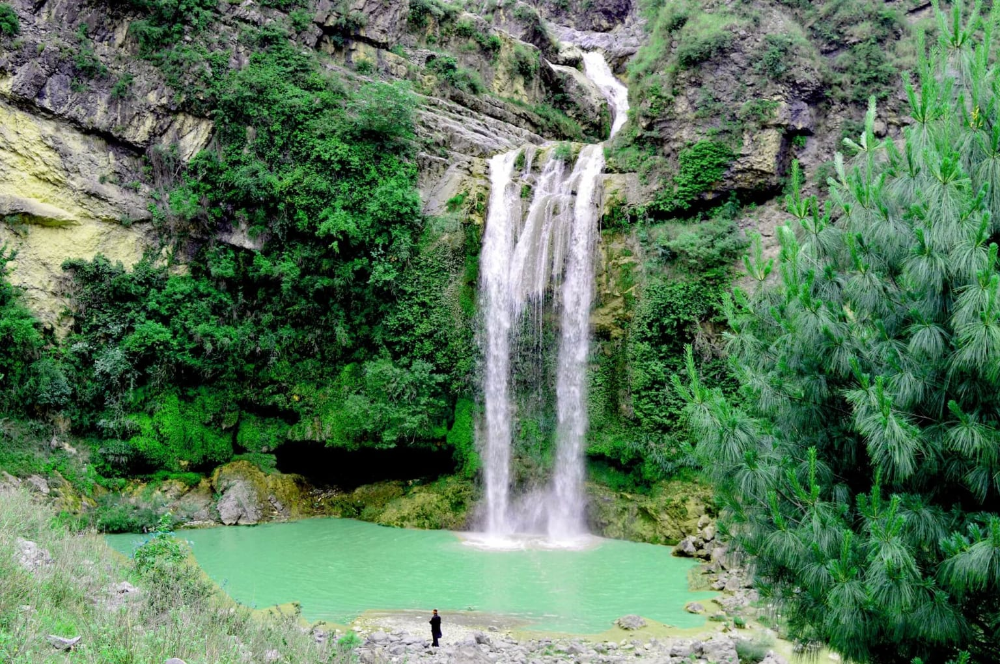
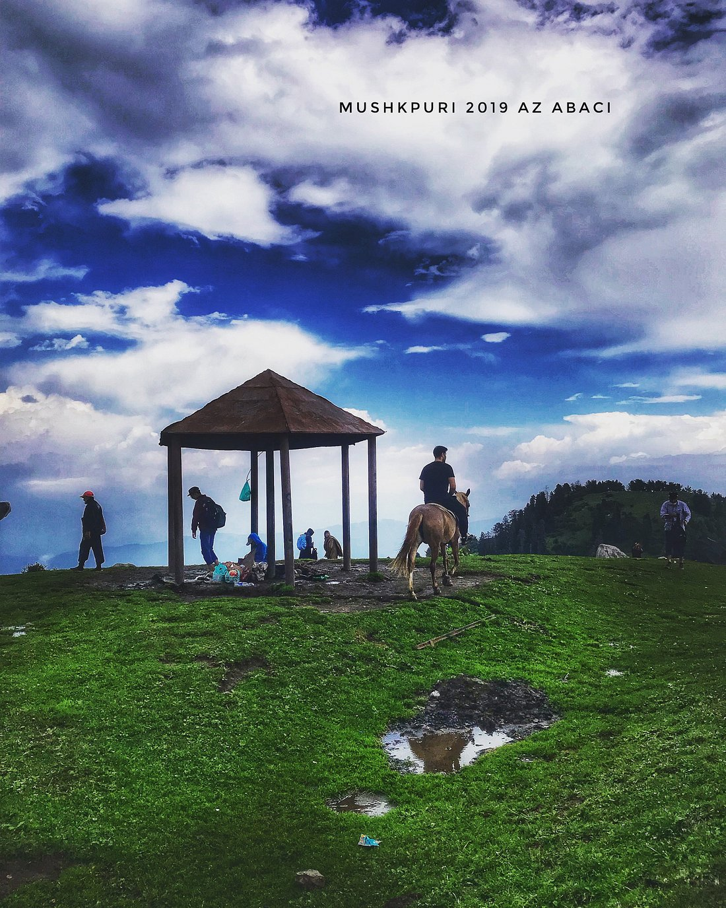
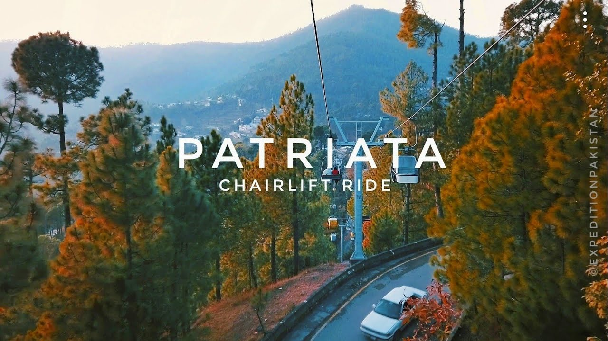

Abbotabad
HARNOI
ILYASI MASJID
SAJIKOT WATERFALL
Harnoi is a small town, which is located 11km east of Abbottabad on Nathia Gali Road. It marks one of Abbottabads famous places. With the short route from Abbottabad, it takes 15 minutes to drive on the Nathia Gali Road, where you can stop by and enjoy the flowing river.
Ilyasi Mosque is Nawan Shehr villages most magnificent beauty. It marks the most recognized historical places in Abbottabad. Due to its beauty and spirituality, this White Facade mosque is the main attraction of travelers. It is recognized as Abbottabad’s oldest and biggest mosque
Sajikot Waterfall is the most recognized physical feature in Abbottabad, where you can stop by the cliff and enjoy the spectacular view of the waterfall. The waterfall is located in the Havelian Tehsil of Abbottabad. The waterfall marks one of the most beautiful places to visit in Abbottabad due to its natural beauty. Sajikot waterfall is 47 kilometers from Abbottabad and 28 kilometers from Havelian.
Nathiagali
DUNGA GALI PIPE LINE
MUSHKPURI TOP
This is a perfect trail for young people like is and oldies. It is a perfect flat track starting from Dunga Gali and ending at Ayubia. The entire track has lovely views all around. It is around 4 1/2 kilometers track and can be covered in an hour at a confortable pace. The track also has a few tuck shops in between. At the end when you reach Ayubia, you have a choice of coming out directly or through a tunnel. Both, the track as well as the tunnel are more than. A hundred years old. A good track to cover when visiting this area

Its a 2 hour hike up from Dunga Gali bazar - takes you through dense pine forest - and meadows on top - you can see the Jhelum river from there and across Azad Kashmir and the Line of Control into Indian Occupied Kashmir
Murree
MALL ROAD
PATRIATA
Murree's Mall Road is a famous stretch of the road having many shops and restaurants. It's popular among people around the country and tourists all over the world. Mall Road is the busiest part of Murree, where visitors love walking while shopping and buying from handicrafts to dry fruits and from shawls to shoes

Patriata is located in Murree and is also known as the new Murree. Fifteen kilometers away from Murree district. It is a tourist hub where people, through the chair lift and cable cars, enjoy the beautiful views of the landscape. It is a forested area where monkeys and leopards can be seen. It is the highest point, 7,500 feet above sea level.
